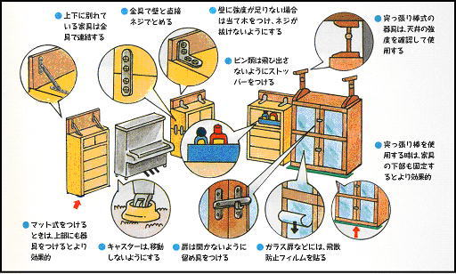
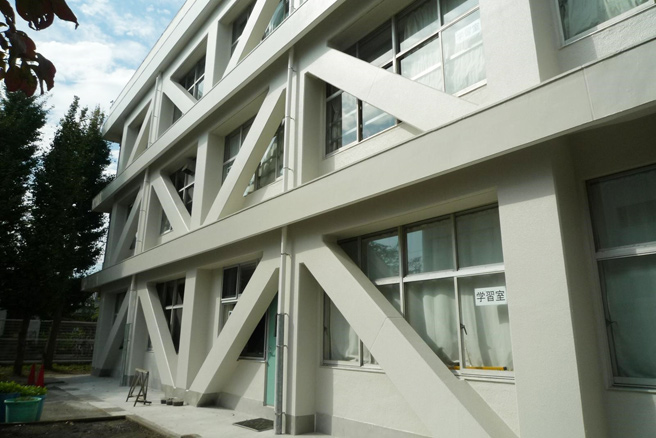
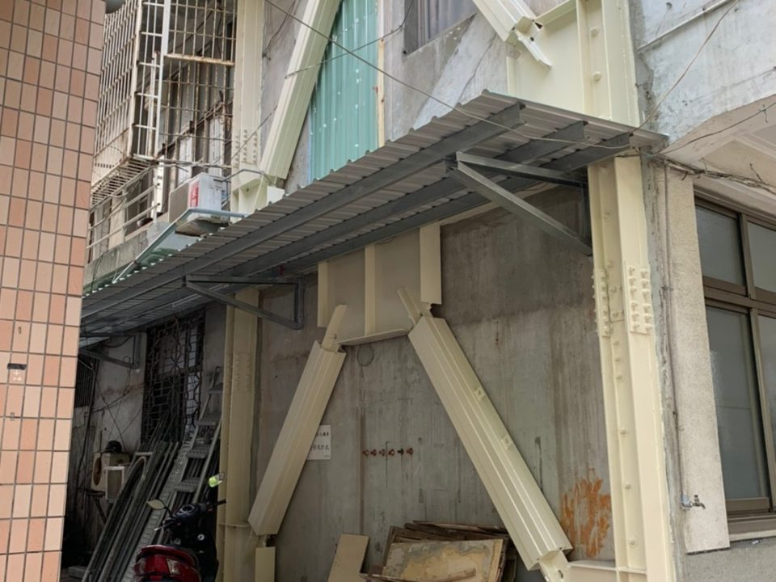

地震前該做的事
地震什麼時候會來沒人知道，但我們可以在平常就做好準備，讓真正遇到災害時能多一點時間逃生、多一點保護自己的機會。
確保家中安全
與因為地震導致房屋倒塌造成的傷害相比，更多人是在地震中被家具傾倒或物品掉落而受傷，甚至因此受困。因此，在地震來臨前，可以將大型家具如冰箱、衣櫃等加裝 L 型固定架或止滑墊等，確保在地震時不會倒下或滑動。櫃子的門也可以加裝扣件或磁扣，避免地震時物品灑落；平時也盡量不要把重物或易碎品放在高處。
除此之外，也要檢查避難路徑是否暢通，有沒有障礙物擋住，並且確認住家周邊的避難處所地點。

防止家具倒下的措施
準備緊急避難包
當地震發生後，如果建築物出現嚴重受損，就必須盡快撤離，此時若平時有準備好緊急避難包，就能立刻攜帶前往避難場所，爭取寶貴的時間。
避難包建議放在門口或床邊等容易取用的位置，裡面可以準備：糧食（例如罐頭、餅乾、巧克力等耐放的食品）、水（至少 1 至 3 天的份量）、基本醫療與生活用品（如優碘、棉花棒、紗布、面紙、口罩，以及個人的常備藥物）、保暖衣物（毛毯、外套、暖暖包等，考量災害發生可能是在冬天）、重要文件的影本、少量現金、手電筒、收音機或其他資訊取得設備等。
平時也要定期檢查避難包內容是否過期、損壞，並依季節與個人需求調整更新，確保在真正需要時能派上用場。
檢查房屋耐震
如果是早期（如 921 地震前）興建的房屋，可能會因為當時的耐震標準較低，耐震程度無法達到現行的標準，或因為老舊等原因導致耐震能力下降。
可向政府申請耐震能力評估，了解建築物的結構狀況。如果有需要，也能進行耐震補強，例如加寬梁柱、設置剪力牆、補強鋼骨結構等。補強措施比全面重建成本更低，也能大幅提升建築物的耐震係數。

新增斜撐鋼樑

新增制震牆